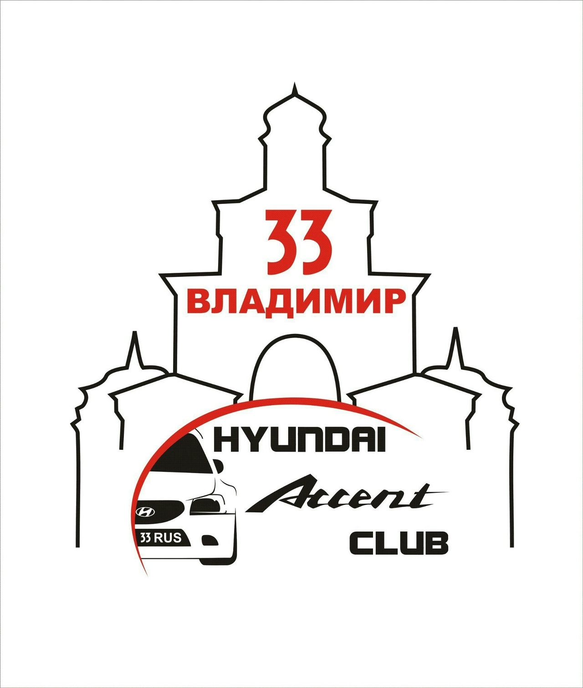

Масляный фильтр
Ищем по номеру и резьбе/размеру, а не только по слову «фильтр».
Фото: Dvortygirl / Wikimedia Commons, CC BY-SA 3.0.
Запчасти, клубный сервис, полезные инструкции и местные контакты — всё в одном месте. Каталог ориентирован на Hyundai Accent II (LC/LC2) ТАГАЗ: седан 1.5 л, прежде всего G4EB и G4EC/G4EC-G, с учётом машин 2001–2012 годов выпуска.
Открыть каталогВступить в клуб VK

Клуб владельцев Accent во Владимирской области. Здесь можно найти советы, спросить про ремонт, показать машину и познакомиться с другими акцентоводами.
Перейти в клуб VK →Подбор для ТАГАЗа. Удобнее ориентироваться по двигателю, кузову, стороне установки, образцу старой детали и каталожному номеру.
Фотографии ниже показывают тип деталей, а не конкретную комплектацию ТАГАЗа.
Ищем по номеру и резьбе/размеру, а не только по слову «фильтр».

Для G4EC важно учитывать тип и калильное число, указанные для конкретного двигателя.

При подборе обращайте внимание на форму, размеры и исполнение суппорта.
Подборка фотографий кузова LC. Ниже — открытые фотографии модели; отдельный блок для фото машин участников клуба можно пополнять снимками из нашей группы VK.

Классический кузов второго поколения.

Accent второго поколения с двигателем 1.5.

Ещё один вариант кузова Accent II.
Ниже подключена лента сообщества VK. Она загружается непосредственно из группы Hyundai Accent Club Владимир, поэтому новые публикации и фотографии могут появляться здесь без ручной загрузки на сайт.
Если VK не показывает ленту в браузере, откройте группу напрямую.
Открыть группу VK →д. Байгуши, ул. Центральная, 6
Клубный сервис Hyundai Accent Vladimir
Основной акцент сайта — помочь акцентоводу найти профильную помощь и запчасть без долгих поисков.
Клуб Hyundai Accent Vladimir →пр. Ленина, 73, Владимир
+7 (4922) 45-25-35
Пн–Пт 09:00–18:00, Сб–Вс 09:00–15:00
ул. Растопчина, 59, Владимир
+7 (910) 090-35-35
Корейские автозапчасти и автохимия.
ул. Куйбышева, 22д, Владимир
+7 (915) 754-47-86
Запчасти для корейских и китайских автомобилей.
Контакты и часы работы местных организаций стоит перепроверять перед визитом: данные бизнеса могут меняться.
Телефоны экстренных служб: 112, 01, 02, 03. Источник: Управление автомобильных дорог Владимирской области.
Управление автомобильных дорог Владимирской области публикует сведения об аварийно-опасных участках и материалы по дорожной обстановке.
Открыть дорожную информацию →Для тех случаев, когда техосмотр действительно требуется, есть пункт ТО на ул. Куйбышева, 28С.
Информация о ТО →